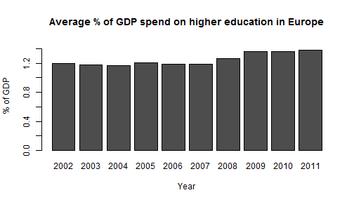

According to the OECD investing in educational institutions...
---
## Introduction
According to the [OECD](http://www.oecd-ilibrary.org/docserver/download/9613041ec018.pdf?expires=1431940016&id=id&accname=guest&checksum=48318748BB6B210C19BF1EFA643E1C38) investing in educational institutions...
* helps foster economic growth
* enhances the productivity
* contributes to personal and social development
* and reduces social inequality.
Data from the OECD reveals that
--- .class #id
## How much is spend on tertiary education
Data from the OECD reveals that
* Canada, chile, Korea and the US spend between 2.4% and 2.8% of their GDP on tertiary education
* Brazil, Hungary, and the Slovak Republic spent less than 1% of their GDP on tertiary education.
--- .class id
## How much does Euroe spend on higher education
* The app uses data from [Eurostat](http://ec.europa.eu/eurostat/home), which is the statistical office of the European Union.
* The official data sources are available online: [http://j.mp/1Ld5a22](http://j.mp/1Ld5a22)
* The data consists of a table with the percentage of the GDP that each European country spent on higher education every year, ranging from 2002 to 2011
* There are a few NAs in the data, but no data cleaning was applied
library(dplyr)
d <- read.csv2("HigherEdGDP.csv", stringsAsFactors = FALSE, na.strings=":")
colnames(d) <- c("geo",paste0("GDP",c(2002:2011)))
gdp_avg <- colMeans(d %>% select(GDP2002:GDP2011), na.rm = TRUE)
barplot(t(as.data.frame(gdp_avg)), ylim = c(0,1.5), ylab = "% of GDP", main = "Average % of GDP spend on higher education in Europe", xlab = "Year", names.arg = c("2002":"2011"))

--- .class id
## Average % of GDP
```{r, warning=FALSE, message=FALSE, fig.height=4, fig.width=7}
library(dplyr)
d <- read.csv2("HigherEdGDP.csv", stringsAsFactors = FALSE, na.strings=":")
colnames(d) <- c("geo",paste0("GDP",c(2002:2011)))
gdp_avg <- colMeans(d %>% select(GDP2002:GDP2011), na.rm = TRUE)
barplot(t(as.data.frame(gdp_avg)), ylim = c(0,1.5), ylab = "% of GDP", main = "Average % of GDP spend on higher education in Europe", xlab = "Year", names.arg = c("2002":"2011"))
```
The app is available online: https://highered.shinyapps.io/GDP_HigherEd Please select either the map or the motion chart.
--- .class id
## What the app does
The app is available [online: https://highered.shinyapps.io/GDP_HigherEd](https://highered.shinyapps.io/GDP_HigherEd/)
Please select either the map or the motion chart.
* Map view: The data is presented using Google Map Chart
+ Missing data is not visualized
+ The higher the percentage of GDP spend on higher education, the darker the green color of the country on the map.
* Motion chart: The data is presented using Google Motion Chart
+ The chart utilizes Adobe Flash, which is not available for Android and iOS
+ You can see the change over time by using the animation feature
| Introduction | 1 |
|---|---|
| How much is spend on tertiary education | 2 |
| How much does Euroe spend on higher education | 3 |
| Average % of GDP | 4 |
| What the app does | 5 |
| Table of Contents | t |
|---|---|
| Exposé | ESC |
| Full screen slides | e |
| Presenter View | p |
| Source Files | s |
| Slide Numbers | n |
| Toggle screen blanking | b |
| Show/hide slide context | c |
| Notes | 2 |
| Help | h |